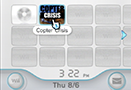
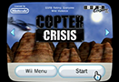
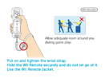
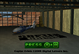
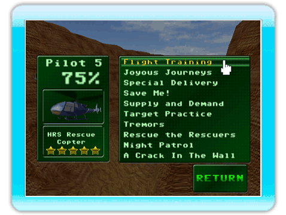

7 |
Cómo empezar |
 |




Cuando inicia "Copter Crisis" por primera vez, observará 5 espacios de cuenta libres para uno a 5 pilotos. Seleccione una de las 5 cuentas disponibles para empezar a jugar las misiones que le serán encomendadas en Black Rock Canyon.
En la parte izquierda de la pantalla, puede ver la cuenta del piloto en misión, el porcentaje de avance en el juego y el helicóptero que está actualmente en servicio.
 |
 |
 |
 |